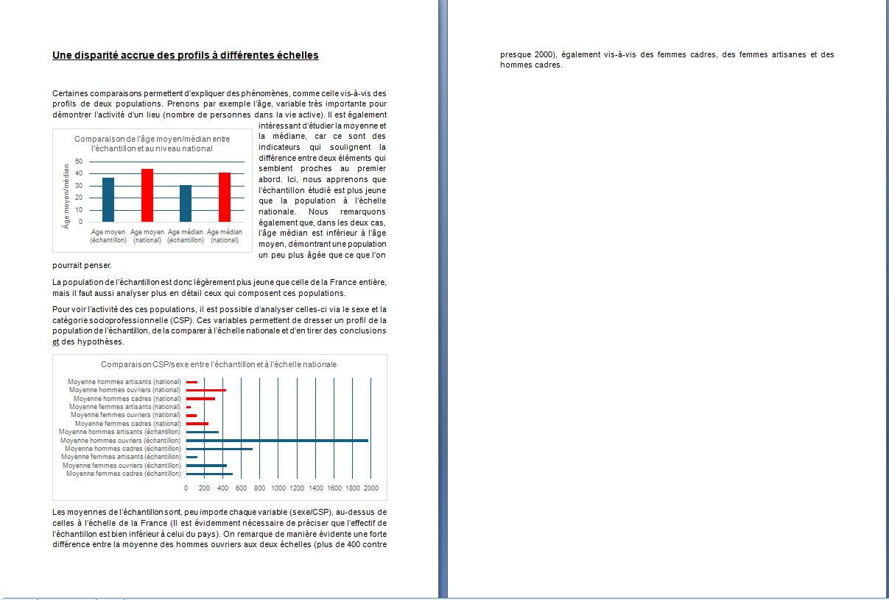

Cette SAÉ avait pour objectif d'utiliser les notions apprises en cours de statistique descriptive, telles que la moyenne, la médiane ou encore les quantiles, en analysant des données issues du site de l'INSEE sur la démographie en France.
Pour ce travail, nous devions analyser des données récupérées sur le site de l'INSEE exportées dans un fichier Excel, puis constituer un rapport écrit sur des données intéressantes à mettre en lumière, tout en réalisant des graphiques et en les expliquant.